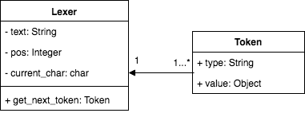

In order for a machine to understand what needs to be done when reading a program, it first needs to break the text into components called tokens. A token is an object which has a type and value. This process of breaking apart the text into tokens is called lexical analysis. This component is represented in the lexer.py script. The implementation of the token object is as follows.
class Token(object):
def __init__(self, type, value):
self.type = type
self.value = value
The lexer (or lexical analyser) is represented as an object which contains the entire text of the Cuneiform script, the current position being analysed in the text (index of the current character in the string), and the character in the current position. A Lexer object is represented as follows.
class Lexer(object):
def __init__(self, text):
self.text = text
self.pos = 0
self.current_char = self.text[self.pos]
The lexer and Token objects have a relationship as shown below.
Consider the following operation in Cuneiform.
var x = 1 + 2;When this expression is obtained by the lexer from a Cuneiform script, it gets a string "var x = 1 + 2;". In order for the lexer to actually understand what needs to be done with this string, it is broken apart into components called tokens.
The function get_next_token in the Lexer class is the lexical analyser. Each time this is called, the next token from the script of characters is obtained.
Consider the above code being passed into the lexer. The code is stored in the variable text, that holds the code string. pos is an index into that string. The value of pos is initially set to 0, and therefore, points to the character 'v' in var.
In this text, it identifies that 'var' is a reserved keyword in the Cuneiform programming language, and assigns it the token object Token(VAR, 'var')
The lexer identifies x to be a variable ID, and as a result assigns it the token Token(ID, 'x').
Similarly, the entire text is divided into the following set of tokens.
Cuneiform consists of three types of tokens:
| Type | Description |
| INTEGER_CONST | Integer value (eg: 5) |
| REAL_CONST | Real value (eg: 3.14, 1.5) |
| ID | Variable identifier |
| LCB | Left curly brace (value: {) |
| RCB | Right curly brace (value: }) |
| ASSIGN | Assignment operator (value: =) |
| PLUS | Addition operator (value: +) |
| MINUS | Subtraction operator (value: -) |
| LPAREN | Left parenthesis (value: () |
| RPAREN | Right parenthesis (value: )) |
| MULTIPLY | Multiplication operator (value: *) |
| FLOAT_DIV | Division operator. Result is float value. (value: /) |
| SEMI | Semicolon (value: ;) |
| COL | Colon (value: :) |
| EQUAL | Equal to operator (value: ==) |
| NEQUAL | Not equal operator (value: !=) |
| LESS | Less than operator (value: <) |
| GREATER | Greater then operator (value: >) |
| LEQUAL | Less than or equal to operator (value: <=) |
| GEQUAL | Greater than or equal to operator (value: >=) |
| AND | And operator (value: &&) |
| OR | Or operator (value: ||) |
| STRING | String value |
| LSQB | Left square bracket (value: [) |
| RSQB | Right operator (value: ]) |
| COMMA | Comma (value: ,) |
| DOT | Dot (value: .) |
| EOF | End of file indicator |
| Type | Description | Value |
| VAR | Used for variable declaration. | var |
| INTEGER_DIV | Integer division. Results in an integer value. | div |
| PRIORITY | Used to define the priority value of a node | priority |
| PRECONDITIONS | Used to define the precondition set of a node | preconditions |
| NODE | Declaring a node | node |
| WHILE | Indicating a while loop | while |
| ACTION | Defining an action for a node | action |
| IF | Defining 'if' condition | if |
| ELIF | Else-if in an 'if' condition | elif |
| ELSE | Else in an 'if' condition | else |
| NEW | Used in the declaration of system operations | new |
| FOR | For loops, used to iterate through arrays | for |
| IN | Used in for loops when assigning array element in current index to a temporary variable | in |
| SLOT | Used to get data from a slot | Slot |
| NULL | Indicating variables with no assigned values | null |
System operations are assigned tokens of type SYSOP, and values relevant to the type of operation. The possible values are:
The next section explores the implementation of the interpreter which executes the code written in the Cuneiform script.